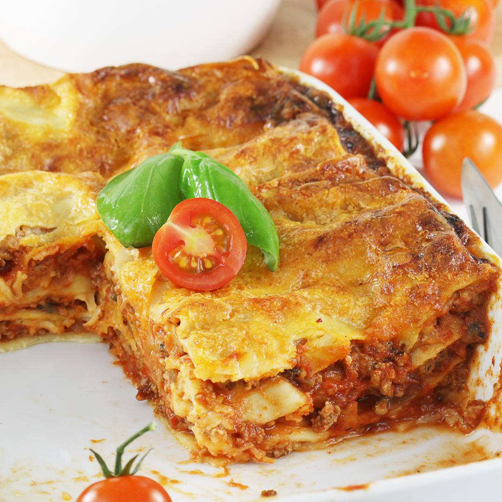

Lasagne

Pyszna i super prosta do zrobienia lazania.
To moja polska wersja lasagne z mięsem mielonym.
Przepis opisałam krok po kroku razem ze zdjęciami pomocniczymi.
Lazania.. fantastyczna propozycja na sycący obiad.
- 700 g łopatki wieprzowej
- 2 średnie cebule - 200 g
- pół główki czosnku - 6 większych ząbków
- szklanka przecieru pomidorowego - 330 g
- większy słoiczek koncentratu pomidorowego - 200 g
- zioła i przyprawy: po płaskiej łyżce majeranku i ziół prowansalskich
- 4 łyżki oleju roślinnego
- 12 płatów makaronu suchego do lazanii - 215 g
- 250 g sera mozzarella nie z zalewy
- 250 g sera żółtego np. kurpiowski